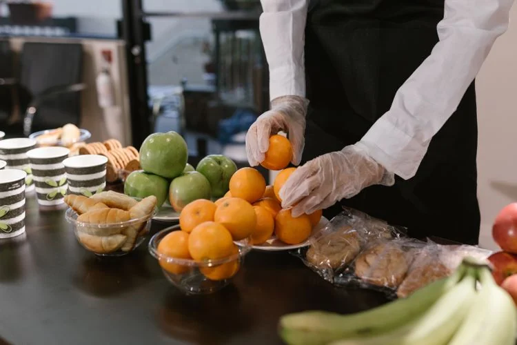

Preparation & setup
Discuss the practical help needed before your guests arrive.
THE PEOPLE BEHIND THE WELCOME
Event staffing and hospitality support planned around your guests, your space, and the experience you want to create.
Plan your gathering
CONSIDERED FROM THE START
Good service starts before guests arrive. We discuss the setting, timeline, and responsibilities so your staffing needs can be considered alongside catering, rentals, and event management.
THE RIGHT PEOPLE FOR THE OCCASION
Tell us where you need support. Availability, responsibilities, and the final scope are confirmed in your proposal.
Preparation, setup, and coordination with the venue and other suppliers.
Guest-facing hospitality and food or beverage service as agreed.
Confirm clearing, wrap-up, and any collection responsibilities.
A FEW HELPFUL DETAILS
Yes. Describe the roles and event needs in your inquiry. Availability and the appropriate scope will be confirmed before booking.
Yes. Include rentals, hospitality supplies, audiovisual, or signage needs when you contact us so they can be discussed together.
SOUTHERN CRESCENT HOSPITALITY